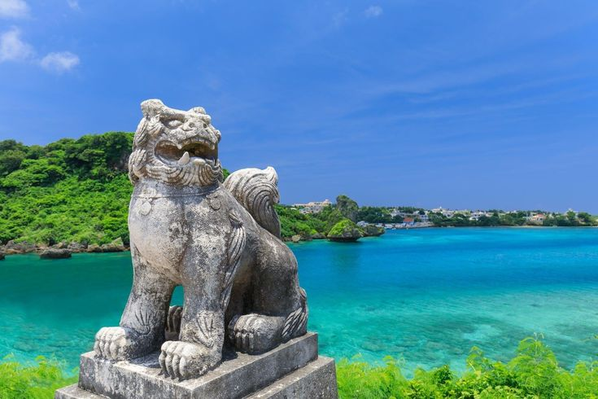

Origem do Karatê

Séc. XIV–XVOkinawa
Berço do Karatê — a ilha onde o "Te" (mão) nasceu do encontro entre a cultura local e as influências chinesas trazidas por marinheiros e monges.
Saber mais Kenpō Chinês
Kenpō Chinês
Influência Chinesa
As artes de combate chinesas fundiram-se ao Te local, criando o Tode — a "mão chinesa" — que mais tarde evoluiria para o Karatê moderno.
Saber mais 1922
1922
Chegada ao Japão
Em 1922, Gichin Funakoshi levou o Karatê a Tóquio. Uma demonstração que mudaria para sempre a história da arte marcial e do esporte mundial.
Saber mais